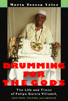

The world through the eyes of a master religious drummer
The world through the eyes of a master religious drummer


 The world through the eyes of a master religious drummer
The world through the eyes of a master religious drummer

|  |
Drumming for the GodsThe Life and Times of Felipe García Villamil, santero, palero, and abakuáMaría Teresa Vélezpaper EAN: 978-1-56639-731-5 (ISBN: 1-56639-731-6) |
"This is without a doubt the most comprehensive English language study of an individual Cuban religious drummer."
—Steve Cornelius
"I am Felipe García Villamil" begins Drumming for the Gods, the life history of the Afro-Cuban artist whose music has survived both political and personal upheaval. "Balogún for thirty years. Olúañá, of Matanzas, Cuba, for about forty years. Omóañá for almost forty-five years. OlúIyesá [he who knows the secrets of the Iyesá drums]." A practitioner of sacred drumming for almost his entire life, Felipe practiced his trade in Cuba both before and after the Revolution and brought it with him to New York, where he continues to play for the gods.
This book focuses on three periods of Felipe's life, each marked by changes in his personal life and by important historical events. The first period covers his formative years during which he received his initial training. Through Felipe's story, we explore the legacy of slavery in Cuba, the nature of Afro-Cuban religions and their musical traditions, and the history of batá drums. The second period covers the critical years of the Cuban Revolution. Here we see the effect of social turmoil both on music and religious practice (santero, palero, and abakuá). The third period covers Felipe's life in New York as a refugee/immigrant, and the role of music in rebuilding his identity. Felipe's story illuminates his cultural practices and beliefs as well as the ways in which an individual musician selects and modifies the elements of his cultural heritage to create a voice that is personal and unique. Felipe not only lives through history but also makes history, shaping an identity that cannot be described as "Cuban immigrant," "Afro-Cuban," religious drummer," or "santeria initiate," but is composed of all of them.
Through Felipe's experiences, María Teresa Vélez reveals the interaction between social, political, economic, and cultural forces and an individual's own actions. The professionalization of musicians in Cuba following the Revolution and the plight of Afro-Cuban immigrants in New York are seen as large historical and social problems to which Felipe must personally respond. A noted ethnomusicologist, Vélez provides the most insightful and comprehenisve English-language study of an individual Cuban religious drummer available.
Drumming for the Gods is a must-read for those interested in ethnomusicology, Caribbean studies, and Afro-Cuban religions and culture.
Excerpt available at www.temple.edu/tempress
"Drumming for the Gods constitutes an impressive accomplishment and includes a great deal of previously unavailable information. It represents a significant contribution to existing literature on Cuban music and cultural history."
—Robin Moore, Temple University
"[This book] documents the musical traditions of the Afro-Christian Santaria cults through the life history of one of Cuba’s most esteemed practitioners of sacred drumming."
—Institute for Studies in American Music Newsletter
Acknowledgments
A Note on Spelling
Prologue
Part I: Learning the Trade
1. Background
2. Entrance into the Afro-Cuban Religious World
3. Early Musical Experiences
4. Learning to Play Batá
5. History of the Drums
Part II: Life as a Musician during the Revolution
6. Making Ends Meet
7. Becoming a "Cultural Worker"
8. Performing Afro-Cuban Religious Music in Secular Public Contexts
9. Performing Afro-Cuban Religious Music in Private Ritual Contexts
10. Searching for Alternatives: Becoming a Craftsman of Religious Objects
11. Crafting A Bembé Drum: "Manufacturing" Material Culture to Obey the Orichas"
Part III: Life as a Diasporic Musician
12. Leaving Cuba
13. Building the Present: Exercising His Trade in His New Home
14. The Tools of the Trade
15. The Artisan Transformed into an Artist
16. Filipe's "There" Faces His "Here"
17. The Struggle of Memory over Forgetting
Epilogue
Notes
Bibliography
Glossary
Index
Photographs
María Theresa Vélez is a freelance ethnomusicologist.
Latin American/Caribbean Studies
Music and Dance
Sociology
Studies in Latin American and Caribbean Music, edited by Peter Manuel.
Studies in Latin American and Caribbean Music, edited by Peter Manuel, aims to present interdisciplinary studies in the traditional and contemporary musics of Latin America and the Caribbean.
© 2015 Temple University. All Rights Reserved. This page: http://www.temple.edu/tempress/titles/1412_reg.html.